전기철도기사 (2003-05-25 기출문제)
1과목: 전기철도공학
1. 실리콘정류기의 내부 단락사고 검출 계전기는?
- 온도계전기
- 역류계전기
- 접지계전기
- 직류 과전류계전기
(정답률: 알수없음)

2. 교류 강체 전차선로(R-Bar방식)에서 전기차 운전속도 V가 V≤ 120km/h일 때 브래키트의 최대 허용간격은 몇 m 인가?
- 5
- 10
- 15
- 20
(정답률: 알수없음)
3. 직선구간에서 가공 전차선로의 트롤리선(전차선)을 지그재그 편위로 하는 이유는?
- 온도 변화에 따른 신축작용
- 팬타그래프의 편위 이탈 방지
- 팬타그래프의 특정부분 마모 방지
- 트롤리선의 장력 분산
(정답률: 알수없음)
4. 귀선용 레일의 전위에 대한 설명 중 옳지 않은 것은?
- 50kg/m의 레일이 60kg/m의 레일보다 높다.
- 레일의 고유저항이 클 수록 높다.
- 부하점과 변전소 거리가 큰 만큼 높다.
- 레일의 대지 절연저항이 적을수록 높다.
(정답률: 알수없음)
5. 가공 전차선의 편위는 직선구간에서는 좌우 몇 mm 를 표준으로 하고 있는가?
- 100
- 200
- 300
- 400
(정답률: 알수없음)
6. 흡상변압기의 권수비는?
- 1:1
- 2:1
- 3:1
- 4:1
(정답률: 알수없음)
7. 헤비심플커터너리 조가방식의 구조 및 특성을 설명한 것으로 옳은 것은?
- Y선으로 지지점 부근의 압상량을 크게 한다.
- 가고가선 2조를 일정한 간격으로 병행하여 가설 하였다.
- 심플커터너리 가선에서 장력을 크게 하였다.
- 250km/h 집전시에 전차선의 지지점에서 최대 압상량이 25mm정도이다.
(정답률: 알수없음)
8. 급전계통을 구분하고 연장 급전을 하기 위하여 설치하는 것은?
- SS
- SP
- SSP
- FTP
(정답률: 100%)
9. 굵기가 110mm2인 전차선의 잔존 단면적을 67.6mm2, 잔존 지름을 7.5mm로 하고, 안전율은 2.5, 전차선의 파괴강도는 35㎏/mm2이면 전차선의 허용장력 T는 약 몇 ㎏f 인가?
- 745
- 946
- 1176
- 1275
(정답률: 알수없음)
10. 전차선에 요구되는 성능과 거리가 먼 것은?
- 연성이 강해야 한다.
- 가선 장력에 대하여 충분히 견디어야 한다.
- 접속 개소의 통전 상태가 양호해야 한다.
- 집전장치 통과와 집전에 지장이 없어야 한다.
(정답률: 알수없음)
11. 전차선의 마모율과 관계가 가장 적은 것은?
- 전차선의 항장력
- 허용 잔존 지름
- 팬터그래프 통과 회수
- 전차선의 안전율
(정답률: 알수없음)
12. 교류 전철 변전소의 주변압기로 사용하는 결선방식은?
- BT 결선
- AT 결선
- 스코트 결선
- Y-△ 결선
(정답률: 알수없음)
13. 교류 강체 가선방식에서 컨덕터 레일구간의 온도변화에 의한 리지드바의 팽창을 상쇄시켜주는 장치는?
- 확장장치
- 직접유도장치
- 건널선장치
- 지상부이행장치
(정답률: 알수없음)
14. 가공 전차선과 접지물간의 절연 이격거리로 적합하지않은 것은?
- 직류 1500V의 표준 이격거리는 250mm 이상이다.
- 직류 1500V의 최소 이격거리는 70mm 이상이다.
- 교류 25000V의 표준 이격거리는 300mm 이상이다.
- 교류 25000V의 최소 이격거리는 200mm 이상이다.
(정답률: 알수없음)
15. AT방식 전철변전소에 직렬콘덴서를 설치하는 주된이유는?
- 전식 발생 억제
- 역률 개선
- 통신유도장해 방지
- 분수조파 발생 억제
(정답률: 알수없음)
16. 전차선(Cu 110mm2)을 영구 신장 조성시 과장력 2000kgf에서 몇 분간 시행하는가?
- 10
- 20
- 30
- 40
(정답률: 알수없음)
17. 전기차에서 효율이 0.9 인 주 전동기가 3대인 경우 출력은 몇 kW 인가?(단, 주 전동기의 단자전압은 1200V, 전류는 200A 이다.)
- 216
- 267
- 648
- 800
(정답률: 70%)
18. 단권변압기 급전방식에서 급전선 인류장치의 설치 개소로 볼 수 없는 것은?
- 역 구내의 전후
- 연속하는 구배의 정점 부근
- 지상구간에서 지하구간으로 급전선을 가선하는 경우
- 차량기지 검수고
(정답률: 알수없음)
19. 전차선 및 보조 조가선의 횡진을 방지하는 장치는?
- 장력조정장치
- 흐름방지장치
- 진동방지장치
- 건널선장치
(정답률: 60%)
20. 2 이상의 급전점에서 급전할 수 있는 급전구간을 1급전점에서 급전하는 방식을 무엇이라 하는가?
- 병렬급전
- 연장급전
- 단독급전
- 비상급전
(정답률: 알수없음)
2과목: 전기철도 구조물공학
21. 전기철도 구조물에서 단독 지지주로 취급하여 계산하는 지지주가 아닌 것은?
- 가동브라켓 지지주
- 고정브라켓 지지주
- 크로스빔 지지주
- V형빔 지지주
(정답률: 알수없음)
22. 전차선로용 강구조물 중 보통 압축재의 세장비는 얼마이하로 제한하고 있는가?
- 150
- 200
- 220
- 250
(정답률: 알수없음)
23. 빔의 강도계산에서 선로와 평행한 방향의 하중을 적용하지 않는 경우는?
- 전체 길이의 1/3이내에 전선이 편중되어 지지되고 있는 경우
- 전체 길이의 1/4이내에 전선이 편중되어 지지되고 있는 경우
- 구조물(특히 빔)에 지지되는 전선의 가닥수가 작을 때
- 구조물(특히 빔)에 지지되는 전선의 가닥수가 많을 때
(정답률: 알수없음)
24. 전차선로에 사용하는 애자 중 원칙적으로 사용하지 않는 애자는?
- 지지애자
- 인류애자
- 장간애자
- 현수애자
(정답률: 알수없음)
25. 부재를 절단하려고 하는 응력으로서 보, 기둥, 벽 등에서 일어나는 응력은?
- 축방향력
- 절단력
- 휨모멘트
- 비틀림모멘트
(정답률: 73%)
26. 전차선로의 지지물 중 강관주의 도기호로 맞는 것은?
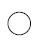
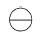
(정답률: 알수없음)
27. 그림과 같이 시설하는 지선으로 큰 장력이나 수평장력이 가해지는 헤비심플 커티너리 가선방식의 인류용으로 사용되고 있는 지선은?
- 수평지선
- 궁형지선
- 2단지선
- V형지선
(정답률: 70%)
28. 직선 가공전차선로 구간의 선로에서 전차선을 지그재그가선함에 따른 수평장력 P 를 옳게 나타낸 것은?(단, 수평장력 : P[㎏.f], 지지점 간격 : S[m], 전선장력 : T[㎏.f], 전선의 기울기 : d[m]이다.)
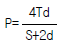
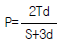
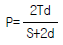
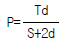
(정답률: 알수없음)
29. 단독 지지주에서 지지점이 6.75m인 전차선에 136.4kgf의 수평집중하중이 작용하는 경우 지면과의 경계점 전단력은 몇 kgf 인가?
- 20.2
- 80.8
- 136.4
- 920.7
(정답률: 73%)
30. 전철주 기초의 강도계산에서 평지 또는 절취장소 및 성토 장소로 분류하는데 이 지형에 대한 하중방향에 대한 계수 K를 무엇이라 하는가?
- 지형계수
- 형상계수
- 강도계수
- 지내력계수
(정답률: 60%)
31. 그림은 완금을 이용하여 제작한 빔의 구조물이다. 전차 선로에서 사용하는 용어로 A에 해당되는 것의 명칭은?
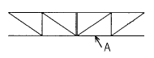
- 하현재
- 완금
- 부재
- 하부주재
(정답률: 알수없음)
32. 물체가 회전하지 않아야 할 조건은?
- 물체에 작용하는 양장력의 합이 0 이다.
- 힘의 모멘트 합이 0 이다.
- 동일점에 작용하는 힘이 0 이다.
- 양단의 힘의 합이 0 이다.
(정답률: 알수없음)
33. 지표면에서 높이가 11m인 단독 지지주에 29㎏f/m의 수평 분포하중이 작용하는 경우 4m 지지점에서의 전단력 Qh는 몇 ㎏f.m 인가?
- 196
- 203
- 560
- 1120
(정답률: 알수없음)
34. 교류 강체방식에서 R-bar 지지용 애자의 성능 중 상용 주파수 유중 파괴전압은 몇 kV 인가?
- 100
- 125
- 140
- 275
(정답률: 알수없음)
35. 지선은 전주에 작용하는 수평하중의 몇 % 를 부담하는가?
- 50
- 75
- 100
- 125
(정답률: 알수없음)
36. 부급 전선 및 보호선의 인류개소에 사용하는 애자는?
- 180mm 현수애자
- 250mm 현수애자
- 항압용 장간애자
- 인장용 장간애자
(정답률: 알수없음)
37. 그림에서 두 힘 P1, P2의 합력 R은 몇 t 인가?
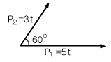
- 7
- 9
- 11
- 13
(정답률: 알수없음)
38. 부재 단면 2차 모멘트에 대한 설명으로 틀린 것은?
- 나란한 축에 대한 단면 2차 모멘트 중에서는 도심축에 대한 단면 2차 모멘트가 최소가 된다.
- 나란한 축에 대한 단면 2차 모멘트 중에서는 도심축에 대한 단면 2차 모멘트가 최대가 된다.
- 정삼각형의 도심축에 대한 단면 2차 모멘트는 축의 회전에 관계없이 일정한 값이 된다.
- 정사각형의 도심축에 대한 단면 2차 모멘트는 축의 회전에 관계없이 일정한 값이 된다.
(정답률: 알수없음)
39. 우리나라의 일반 전철구간에서 표준 경간을 선정할 때의 운전 최대속도는 몇 km/h 인가?
- 80
- 100
- 120
- 150
(정답률: 알수없음)
40. 전철 구조물의 강도 계산과 관계가 가장 먼 것은?
- 속력
- 기온
- 풍속
- 눈
(정답률: 75%)
3과목: 전기자기학
41. 그림과 같이 구형의 자성체가 병렬로 접속된 경우 전체의 자기저항 RT는 몇 AT/Wb가 되겠는가?(단, 가로방향 즉, 200㎜방향임)
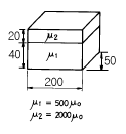
- RT = 2.7×104
- RT = 5.3×104
- RT = 1.1×10-6
- RT = 1.9×10-6
(정답률: 알수없음)
42. 평행판 콘덴서에 어떤 유전체를 넣었을 때 전속밀도가 2.4×10-7C/m2이고, 단위 체적 중의 에너지가 5.3×10-3Ｊ/m3 이었다. 이 유전체의 유전률은 몇 F/m 인가?
- 2.17×10-11
- 5.43×10-11
- 5.17×10-12
- 5.43×10-12
(정답률: 알수없음)
43. 진공 중에 선전하 밀도가 λ[C/m]로 균일하게 대전된 무한히 긴 직선도체가 있다. 이 직선도체에서 수직거리r[m]점의 전계의 세기는 몇 V/m 인가?
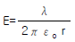
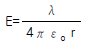
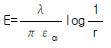
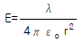
(정답률: 알수없음)
44. 대전 도체 표면의 전계의 세기는?
- 곡률이 크면 커진다.
- 곡률이 크면 적어진다.
- 평면일 때 가장 크다.
- 표면 모양에 무관하다.
(정답률: 알수없음)
45. 와전류의 방향은?
- 일정하지 않다.
- 자력선의 방향과 동일하다.
- 자계와 평행되는 면을 관통한다.
- 자속에 수직되는 면을 회전한다.
(정답률: 알수없음)
46. V=x2+y2[V]의 전위 분포를 갖는 전계의 전기력선의 방정식은? (단, A는 임의의 상수이다.)
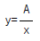
- y=Ax
- y=Ax2
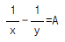
(정답률: 알수없음)
47. 진공내의 점(3,0,0)[m]에 4×10-9C의 전하가 있다. 이 때 점(6,4,0)[m]의 전계의 크기는 몇 V/m 이며, 전계의 방향을 표시하는 단위벡터는 어떻게 표시되는가?
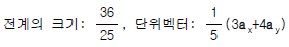
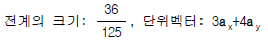
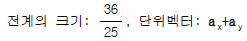
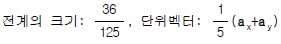
(정답률: 알수없음)
48. 그림에서 단자 ab간에 V의 전위차를 인가할 때 C1의 에너지는?
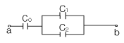
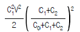
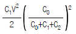
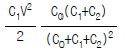
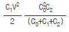
(정답률: 알수없음)
49. 자기인덕턴스 L1[H], L2[H]와 상호인덕턴스 M[H]와의 결합계수는?
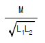
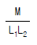
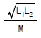
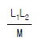
(정답률: 알수없음)
50. 지구는 태양으로부터 P[kW/m2]의 방사열을 받고 있다. 지구 표면에서의 전계의 세기는 몇 V/m 인가?
- 377P
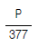
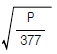
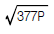
(정답률: 알수없음)
51. 그림과 같은 동축원통의 왕복 전류회로가 있다. 도체 단면에 고르게 퍼진 일정 크기의 전류가 내부 도체로 흘러 들어가고 외부 도체로 흘러 나올 때 전류에 의하여 생기는 자계에 대하여 옳지 않은 설명은?
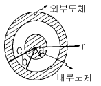
- 내부 도체내(r＜a)에 생기는 자계의 크기는 중심으로부터 거리에 비례한다.
- 두 도체사이(내부공간)(a＜r＜b)에 생기는 자계의 크기는 중심으로부터 거리에 반비례한다.
- 외부 도체내(b＜r＜c)에 생기는 자계의 크기는 중심으로부터 거리에 관계없이 일정하다.
- 외부 공간(r＞c)의 자계는 영(0)이다.
(정답률: 알수없음)
52. 전하 혹은 전류 중심으로부터 거리 R에 반비례하는 것은?
- 균일 공간 전하밀도를 가진 구상전하 내부의 전계의 세기
- 원통의 중심축 방향으로 흐르는 균일 전류밀도를 가진 원통도체 내부의 자계의 세기
- 전기쌍극자에 기인된 외부 전계내의 전위
- 전류에 기인된 자계의 벡터포텐샬
(정답률: 알수없음)
53. 균일한 자계에 수직으로 입사한 수소이온의 원운동의 주기는 2πx10-5sec 이다. 이 균일 자계의 자속밀도는 몇 Wb/m2 인가?(단, 수소이온의 전하와 질량의 비는 2×107C/kg 이다.)
- 2.5×10-3
- 3.2×10-3
- 5×10-3
- 6.2×10-3
(정답률: 50%)
54. 그림에서 전계와 전속밀도의 분포 중 맞는 것은?(단, 경계면에 전하가 없는 경우이다.)
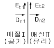
- Et1=0, Dn1=ρs
- Et2=0, Dn2=ρs
- Et1=Et2, Dn1=Dn2
- Et1=Et2=0, Dn1=Dn2=0
(정답률: 알수없음)
55. 막대자석의 회전력을 나타내는 식으로 옳은 것은?(단, 막대자석의 자기모멘트 M [wb.m]와 균등자계 H [A/m]와의 이루는 각 θ는 0°＜θ＜90° 라 한다.)
- M ×H [N.m/rad]
- H ×M [N.m/rad]
- μo H ×M [N.m/rad]
- M ×μo H [N.m/rad]
(정답률: 알수없음)
56. 평행한 두 도선간의 전자력은? (단, 두 도선간의 거리는 r[m]라 한다.)
- r2에 반비례
- r2에 비례
- r에 반비례
- r에 비례
(정답률: 알수없음)
57. 균일하게 자화된 체적 0.01m3인 막대 자성체가 500A.m2인 자기모멘트를 가지고 있을 때, 이 막대 자성체의 자속밀도가 500mT이었다면 이 막대 자성체내의 자계의 세기는 몇 kA/m 인가?
- 318
- 328
- 338
- 348
(정답률: 알수없음)
58. 무손실 전송회로의 특성 임피던스를 나타낸 것은?
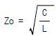
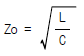
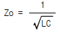
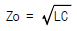
(정답률: 알수없음)
59. 간격 d의 평행 도체판간에 비저항ρ인 물질을 채웠을 때 단위 면적당의 저항은?
- ρd
- ρ/d
- ρ-d
- ρ+d
(정답률: 알수없음)
60. 자유공간 중에서 자계 H =xz2ax[A/m]일 때 0 ≤ x ≤ 1, 0≤z≤1, y=0인 면을 통과하는 전전류는 몇 A 인가?
- 0.5
- 1.0
- 1.5
- 2.0
(정답률: 40%)
4과목: 전력공학
61. 가압수형 원자력발전소에 사용하는 연료, 감속재 및 냉각재로 적당한 것은?
- 연료:천연우라늄, 감속재:흑연, 냉각재:이산화탄소
- 연료:농축우라늄, 감속재:중수, 냉각재:경수
- 연료:저농축우라늄, 감속재:경수, 냉각재:경수
- 연료:저농축우라늄, 감속재:흑연, 냉각재:경수
(정답률: 알수없음)
62. 3상3선식 송전선로에서 각 선의 대지정전용량이 0.5096㎌이고, 선간정전용량이 0.1295㎌일 때 1선의 작용정전용량은 몇 ㎌ 인가?
- 0.6391
- 0.7686
- 0.8981
- 1.5288
(정답률: 70%)
63. 발전기 보호용 비율차동계전기의 특성이 아닌 것은?
- 외부 단락시 오동작을 방지하고 내부고장시에만 예민하게 동작한다.
- 계전기의 최소동작전류를 일정치로 고정시켜 비율에 의해 동작한다.
- 발전자 전류와 계전기의 차전류의 비율에 의해 동작한다.
- 외부 단락으로 인한 전기자 전류의 격증시 계전기의 최소동작전류도 증대된다.
(정답률: 알수없음)
64. 선로개폐기(LS)에 대한 설명으로 틀린 것은?
- 책임 분계점에 전선로를 구분하기 위하여 설치한다.
- 3상 선로개폐기는 3개가 동시에 조작되게 되어 있다.
- 부하상태에서도 개방이 가능하다.
- 최근에는 기중부하개폐기나 LBS로 대체되어 사용하고 있다.
(정답률: 알수없음)
65. 루프(loop)배전방식에 대한 설명으로 옳은 것은?
- 전압강하가 작은 이점이 있다.
- 시설비가 적게 드는 반면에 전력손실이 크다.
- 부하밀도가 적은 농.어촌에 적당하다.
- 고장시 정전범위가 넓은 결점이 있다.
(정답률: 알수없음)
66. 전력선 반송보호계전방식의 고장선택 방법에 해당되는 것은?
- 방향비교방식
- 전압차동보호방식
- 방향거리모선보호방식
- 고주파 억제식 비율차동보호방식
(정답률: 알수없음)
67. 동작전류의 크기에 관계없이 일정한 시간에 동작하는 특성을 가진 계전기는?
- 순한시계전기
- 정한시계전기
- 반한시계전기
- 반한시정한시계전기
(정답률: 알수없음)
68. 종축에 절대온도 T, 횡축에 엔트로피 S를 취할 때 T-S 선도에 있어서 단열변화를 나타내는 것은?
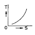
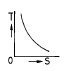
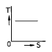
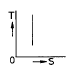
(정답률: 알수없음)
69. 과도안정 극한전력이란?
- 부하가 서서히 감소할 때의 극한전력
- 부하가 서서히 증가할 때의 극한전력
- 부하가 갑자기 사고가 났을 때의 극한전력
- 부하가 변하지 않을 때의 극한전력
(정답률: 알수없음)
70. 표피효과에 대한 설명으로 옳은 것은?
- 전선의 단면적에 반비례한다.
- 주파수에 비례한다.
- 전압에 비례한다.
- 도전률에 반비례한다.
(정답률: 알수없음)
71. 송전 계통의 중성점 접지방식에서 유효접지라 하는 것은?
- 저항접지 및 직접접지를 말한다.
- 1선 지락사고시 건전상의 전위가 상용전압의 1.3배 이하가 되도록 중성점 임피던스를 억제한 중성점접지 방식을 말한다.
- 리액터 접지방식 이외의 접지방식을 말한다.
- 저항접지를 말한다.
(정답률: 알수없음)
72. 전원으로부터의 합성임피던스가 0.25%(10000kVA기준)인 곳에 설치하는 차단기의 용량은 몇 MVA 인가?
- 250
- 400
- 2500
- 4000
(정답률: 60%)
73. 가스절연개폐장치(GIS)의 특징이 아닌 것은?
- 감전사고 위험 감소
- 밀폐형이므로 배기 및 소음이 없음
- 신뢰도가 높음
- 변성기와 변류기는 따로 설치
(정답률: 알수없음)
74. 장거리 송전로에서 4단자 정수가 같은 것은?
- A =B
- B =C
- C =D
- A =D
(정답률: 알수없음)
75. 1일의 평균 사용유량이 35m3/s인 수력지점에 조정지를 설치하여 첨두부하시 5시간, 최대 65m3/s의 물을 사용하려고 한다. 이에 필요한 조정지의 유효 저수량은 몇 m3 인가?
- 9000
- 540000
- 648000
- 900000
(정답률: 50%)
76. 피뢰기의 직렬 갭(gap)의 작용은?
- 이상전압의 파고치를 저감시킨다.
- 상용주파수의 전류를 방전시킨다.
- 이상전압이 내습하면 뇌전류를 방전하고, 속류를 차단하는 역할을 한다.
- 이상전압의 진행파를 증가시킨다.
(정답률: 알수없음)
77. 다도체를 사용한 송전선로가 있다. 단도체를 사용했을 때와 비교할 때 옳은 것은?(단, L은 작용인덕턴스이고, C는 작용정전용량이다.)
- L 과 C 모두 감소한다.
- L 과 C 모두 증가한다.
- L 은 감소하고, C 는 증가한다.
- L 은 증가하고, C 는 감소한다.
(정답률: 알수없음)
78. 정격 10kVA의 주상변압기가 있다. 이것의 2차측 일부하 곡선이 그림과 같을 때 1일의 부하율은 몇 % 인가?
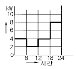
- 52.35
- 54.35
- 56.25
- 58.25
(정답률: 알수없음)
79. 발.변전소에서 사용되는 상분리모선(Isolated phase bus)의 특징으로 틀린 것은?
- 절연 열화가 적고 선간단락이 거의 없다.
- 다도체로서 대전류를 흘릴 수 있다.
- 기계적 강도가 크고 보수가 용이하다.
- 폐쇄되어 있으므로 안전도가 크고 외부로부터 손상을 받지 않는다.
(정답률: 알수없음)
80. 가공전선을 200m의 경간에 가설하여 그 이도가 5m이었다. 이도를 6m로 하려면 이도를 5m로 하였을 때 보다 전선이 몇 cm 더 필요하겠는가?
- 8
- 10
- 12
- 15
(정답률: 알수없음)